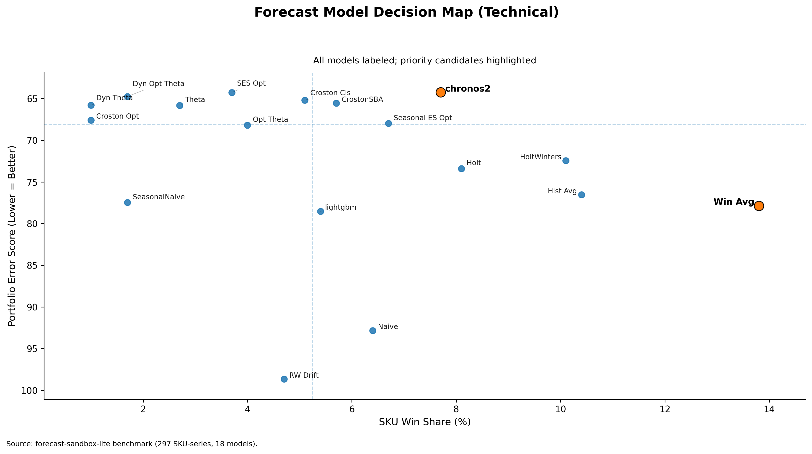

Why the Most Frequent SKU Winner Can Be the Wrong Portfolio Model
In demand forecasting, choosing portfolio model(s) is confusing, as there are a number of choices available. Each Stock Keeping Unit (SKU) shows a different type of behavior (regime). Also, demand drivers vary considerably across products and time periods.
Models (statistical or machine learning) at the SKU level give insight into which models are doing better more often. This may lead to selecting one model as better than others for global portfolio use. This may mislead global portfolio model selection. A model that wins frequently at the SKU level does not automatically become the best portfolio model.
The choice of one or a few models as global model(s) remains solidly grounded in operational reality. More models lead to more maintenance, more monitoring, more serving complexity, and more governance overhead. This leads to the inevitable question: how do we select such model(s)?
First, one has to understand that, at the portfolio level, frequency of wins does not represent stability. A model can be great across a range of SKUs but may perform very poorly on other SKUs. Then, the choice of model pivots to the one that does not perform too badly on average and still remains competitive.
To validate this, I benchmarked 18 different types of univariate models on a 297-SKU subset of data from the FreshRetailNet-50K dataset (daily, intermittent demand, perishable context):
https://huggingface.co/datasets/Dingdong-Inc/FreshRetailNet-50K/tree/main

The plot demonstrates the following:
- WindowAverage model has the highest win share of 13.8%.
- WindowAverage model has a mean score of 77.86 (lower is better).
- The best-performing model is chronos2 with a score of 64.25.
The most frequent winner is about 21% worse than the portfolio leader. This difference matters significantly to planning leaders, as it may increase working capital pressure and disturb service-level stability.
At the portfolio level, stability with operational feasibility remains the top requirement. This stability is achieved by combining both win share and portfolio mean score.
A bit more technical plot is here:
